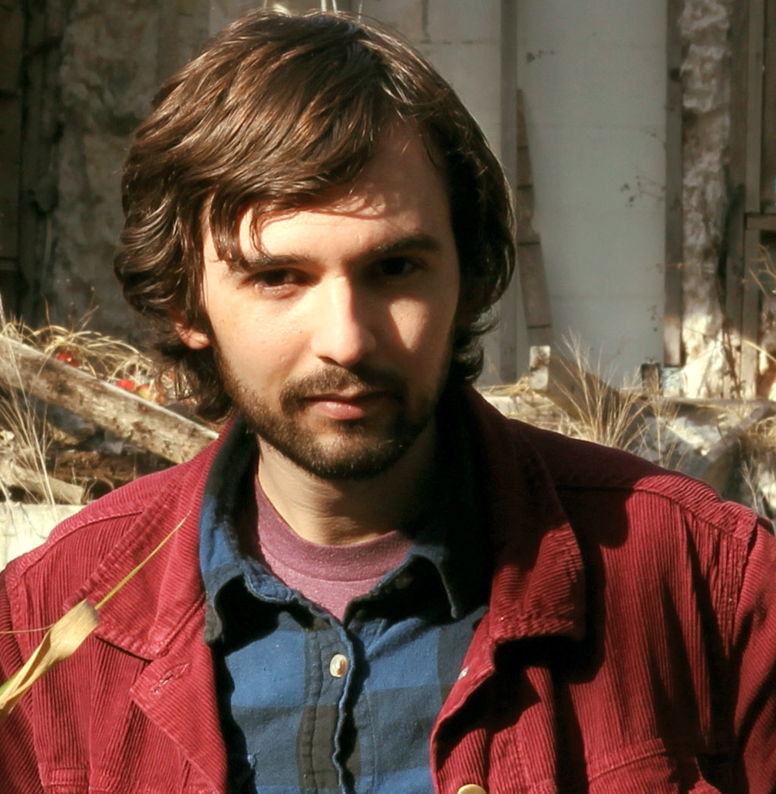
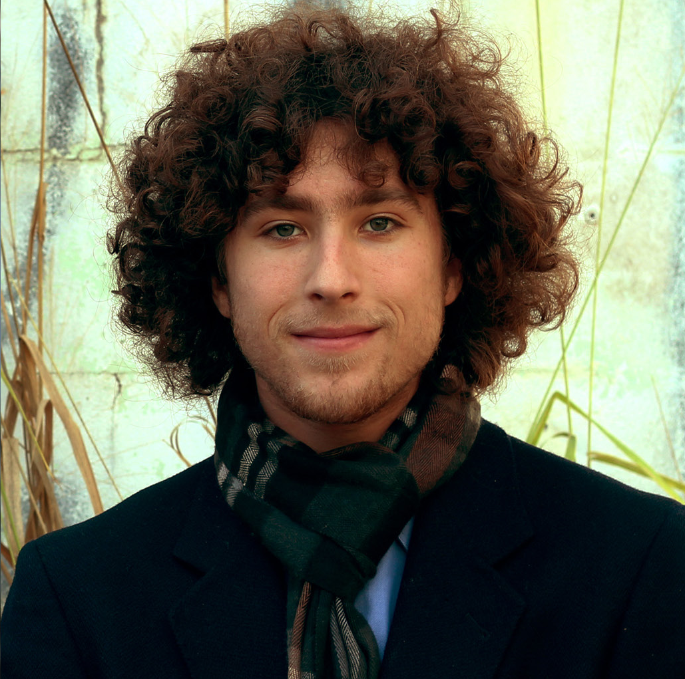

|  |  |
|
Derek Lawrence Murphy grew up in Sarasota. After attending Riverview High School's IB Program, he studied Film and Cognitive Science at the University of Rochester and studied Library and Information Science at Simmons College. Derek is the writer and director of Sarasota Half in Dream. |
Mitchell Zemil grew up in Sarasota, too. He graduated from Pine View School and recently attained his BFA in Film and Television Production at New York University's Tisch School of the Arts. Mitchell is the cinematographer and producer of Sarasota Half in Dream. |